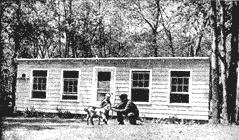
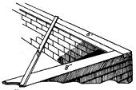
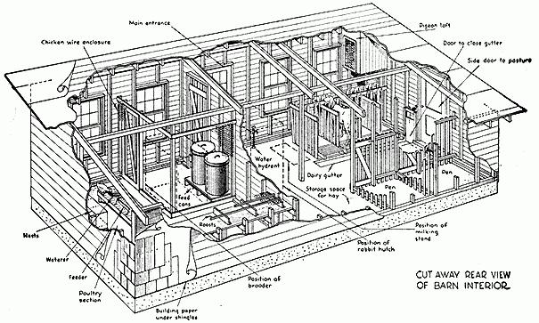

The idea for this "Have-More" Plan came to us at a party-our own "barn warming" party.
When our small "concentrated barn" was finished, we thought it deserved a celebration. And so we invited all the neighbors and our friends to come and see it. We had planned and built our small barn to house not only our milk goats and their kids, but a couple of sheep, 25-30 laying hens, a battery brooder that would produce 30 broilers a month, a six compartment rabbit hutch, a squab loft, plus storage space for grain, straw and baled hay. Yet the size of the barn was only 16 x 30 feet, as large as a fair-sized living-room.
Of course, Carolyn and I-and Jackie-thought our small barn a thrilling place, but when we discovered how interested our guests were in all the animals and the compact, efficient layouts we had worked out for them, we saw that perhaps many people would be interested in the idea of a family producing a large part of its food in spare time on a small amount of land. Eventually, with the prodding of two friends at the party who are in the publishing business, we got this "Have-More" Plan written.
Now after producing about 75% of our family's food for four years, we realize there are three main fundamentals which set a productive country home apart from the ordinary "house in the country." First, the layout of the grounds should be planned for efficient working of the land. Second, a "Harvest Room," or a large kitchen, carefully planned for the processing of food, as well as the preparation, is needed to make the wife's part enjoyable. Third, an efficient small barn is a necessity: A homesteader's livestock can account for 40% to 50% of a family's food.
When we planned our barn we had almost nothing to go by. We wrote to all the barn equipment people, the lumber companies, the state and federal departments of agriculture, asking if they had small barn plans to house goats or a cow, laying chickens, rabbits, sheep, ducks, a pig, pigeons and geese. Some of the answers indicated that the specialists thought we were slightly crazy. Some wrote of small commercial barns that we might adapt.
Well, we finally ended up with somewhere around $15 worth of miscellaneous plans. None of them suitable for what we had in mind, however. So we set about designing our own barn. It was quite a job. We got the most efficient layout for poultry from one place, the best arrangement and style of goat stalls came from study and visits to a number of goat keepers and goat dairies. The broiler battery we bought for around $30 and the rabbit hutch for $20; both are of wire, sanitary and efficient.
I was determined that our barn would be easy to operate with the best practices adapted from commercial barns and not cost us a fortune either. We moved to our country house in the fall and didn't start our barn building until the following spring. During the "long winter evenings," which actually flew by as time does at our place, we worked out scale models of goat stalls, brooder, hutch, feed storage, etc.
I was also able to locate not far away, a dilapitated horse barn and bought it "as is" for $35. It had a lot of good siding and some usable timber in it.
Wrecking the old barn was fun. A couple of teenage boys in the neighborhood got interested in my barn project and they turned out to be a big help in tearing down the old barn. In fact, if you can locate an old building to use and get it cheap enough, then I highly recommend rounding up a couple of teenage boys, buying them each a fifty cent wrecking bar, and turning them loose on the barn you want to demolish. Of course, you'd better be around to see that they don't pull the barn down on their heads.
Anyway, a Saturday afternoon and Sunday was enough time for us to get the sizable horse barn down flat. The following half-dozen winter weekends we spent in what is known as "cleaning up the lumber." This is the tedious process of going over every piece of timber and board and pulling out the old nails. Incidentally, this job is what makes it costly to hire a carpenter to take down an old building and re-use the lumber in a new structure. Usually, unless you are given an old building outright, it doesn't pay to have a carpenter pull it down, clean up the lumber and build with it. A carpenter dislikes old boards because he's apt to run his good saw into a nail and then its an hour's job to resharpen and reset it. Incidentally, an old barn is worth more than an old house-a house doesn't usually supply any more usable lumber and the wrecking job is much greater.
As we cleaned up a pile of lumber, we stowed it in our Crosley, with one of the front seats removed and the top down, and trucked it down the long hill to our place. Naturally, we piled it well so the air could circulate through it until spring.
When the ground thawed, we started building. I believe it was around the first of April when we could actually begin the trenching for the foundation. Before we started, Carolyn and I had a long heated discussion as to exactly where the barn was going to be located. She wanted it six feet closer to the house than I did. Her desire was based on aesthetic reasoning, mine on the practical point that if it were six feet closer, then I would have to dig and chop my way through a tremendous root. Finally, after we delayed the digging a weekend while we argued, we agreed to compromise because the goat we'd bought was due to kid the last week in May, and we had to get the barn done so she could freshen in it-a goat is supposed to "take to" a place after she has had her kids there. We compromised by splitting the difference, only I still dug through the root.
In laying out the barn, which was to be 16 x 30 feet, I measured 16 feet one way, then 30 feet along the south side, 16 along the west end and 30 feet along the back. I connected the stakes with string and started to dig. That, it turned out later, was where I made my first mistake. I forgot, or rather didn't know, one important thing. I should have measured diagonally across corners to see if the measurements were the same. By not doing so, I wound up with a paralleogram instead of a rectangle. Not a noticeable one, but I was off about eight inches.
The foot-wide ditch I dug through stone and roots (there was very little soil as I well remember) to a depth of about two feet which is below frost level in our part of the country.
The next step was building the wooden forms into which concrete for the footing and the foundation wall was poured.
Cement-Ready-Mixed!
We ducked the laborious job of mixing gravel and cement and water to make the concrete; we simply ordered the cement ready-mixed just as a professional builder does. Ready-mixed cement delivered to the job costs little more than the materials and this is the best way to buy it when you are using a yard or more, the minimum amount usually delivered.
Before the cement stiffened in the forms we sunk about a dozen half-inch, foot-long iron bolts upright to use later to anchor the 4 x 4 sill to the foundation. If you have the bolts on hand it is a simple matter for the man who brings your cement to place these for you.
In two days the cement had hardened so we could take off the forms, but inasmuch as we couldn't do any more cement pouring until the next Saturday, we spent evenings tossing in stones to bring the ground inside the foundation up to within 6 inches of where the top of the floor was to be. Three of the six inches were filled with cinders.
On Saturday we were ready for the floor. The cinders were raked level and the sloping form for the dairy gutter was braced in place. The concrete floor was poured in three sections. The fellow who brought the concrete showed us how to lay two 12 foot 2 x 4's just inside the concrete foundation but three inches down from the top. Concrete was poured and the top of these 2 x 4's used as a guide for another 15 foot 2 x 4 which we sawed back and forth leveling the cement. This is not nearly as complicated as it sounds. We used wooden trowels to smooth off the top surface because we didn't want it as slick as you can make cement with a steel trowel.
The next step, according to the good book on carpentry we were reading, was to "lay the sills." This highly technical sounding procedure simply meant to take a piece of timber, in this case we used 4 x 4's from the old barn, and lay them lengthwise along the top of the concrete foundation. Where necessary, holes were bored in this sill to let the anchor bolts come through; the washers and nuts were not screwed on for a few more days just to be absolutely certain that the bolts had hardened into the cement. The sills were set all around the foundation except where the doors were to go.
Next, at the four corners, 4 x 4 uprights (7 1/2 feet at front, 4 1/2 feet at back) were set in place, leveled so they would stand absolutely perpendicular by tacking a pair of braces from about half-way up each post down to the sill at either side. Then the corner posts were spiked to the sills. The 7 1/2 foot 2 x 4's were cut and nailed up. The 2 x 4 plate, the piece that goes across the top of the studs, was leveled and nailed. Next the two end rafters were notched and fitted. The end studs cut and fitted under the end rafters . . . then all the rest of the rafters were put in place, we started boarding the sides and roof.
None of this was complicated, but it did take a good deal of time because we had to figure each step out as we went along. In fact, I would like to say right here, that there is nothing complicated about building a chicken house, a barn or even the traditional country house. And now that the prefabricators are offering complete heating, plumbing, cooking, freezing and laundry facilities built in one compact unit, building your own house has become about as easy as building a log cabin.
If a person has just a little manual dexterity, say the ability to drive a car, then he will have no difficulty in doing practically all the building that has to be done on a homestead. Carpenters, masons, plumbers, electricians love to make a great mystery of things-and the building codes, the building supply people, the utilities and appliance manufactures do their best to keep the average householder from doing any building on his own. But the truth of the matter is that most of the skills of the average mechanic are pretty simple to master. Naturally, their speed and accuracy is based on years of practice. But just as anybody who can read music can play all the notes in a difficult piano piece, anybody can build a barn or a house if he'll get some good manuals on building and good plans for what he wants to build, the difference is that in the case of the amateur at the piano, the piece won't sound right played so slowly, whereas when the building is finished, no one will ever know whether it took a day or a year to build.
To return to our barn, a couple of rainy weekends, a garden waiting to be planted, plus the inescapable fact that Cassandra, the goat we'd bought but hadn't brought home yet, was due to kid in two weeks, made us call a carpenter to help finish our barn. I am not going to take time to describe in detail just how the interior of our barn was finished-you can get a good idea of that from the sketch shown below. If you want to build a small barn, we've had a draftsman work out complete details with a number of variations.
In the years that we've used our barn, we've found little that we've wanted to change. The only addition we are planning is to extend the barn another 10 feet in length to the west; this will give us more storage space which we will need when we begin harvesting our own hay. Of course, we could change the shed-roof to a gable or gambrel roof and store the hay there, but it is just as cheap to extend the length and eliminate hoisting hay into the loft and climbing up to throw it down.
Suggested Reading:
"The 'Have-More' Plan," by Ed and Carolyn Robinson from Mother Earth Shopping.
|
 How to make a building square: measure 6 feet on the end sill and 8 feet on the side. If a cross piece then measures 10 feet (from outer edges) the building is square. This is often called "the rule of 6, 8 and l0." |
 This "breakaway" drawing shows the interior of our small barn. We found that this 16 x 30 foot barn efficiently houses 30 hens, 60 broilers, 20 or more rabbits, 4 goats or a cow and calf, 3 or 4 sheep, and a dozen squab. Barn cost $200 to $400 (1970 prices). Bill of materials, plus complete building plans including 10 large detail drawings of front, ends, interior layout, goat stalls and milking stand, cow stalls, chicken section, squab loft, also a turkey sunporch are available. |
 |